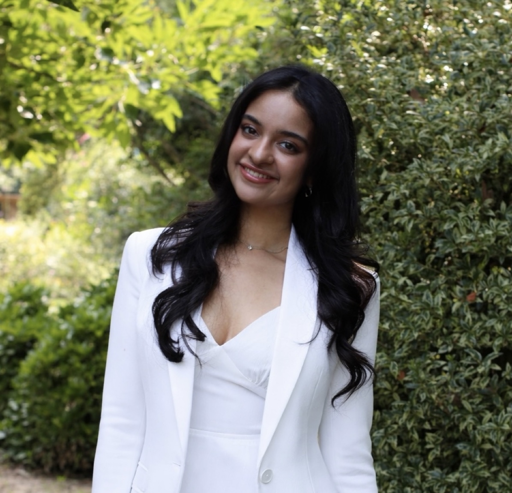

I grew up drawn to both caring for others and understanding how the world works. My earliest experiences with medicine came from helping care for my grandmother. Living with her showed me that health is not only biological, but also deeply personal and cultural. Her preferences, beliefs, and understanding of treatment often differed from my own Western-rooted biomedical ideas. Those differences first surprised me; however, they taught an important lesson: healing begins with empathy and understanding. Through continued aid, I learned that effective care requires more than knowledge of the disease itself. It requires communication, patience, and respect for each patient to understand how they see their illness and recovery. I became interested in understanding the social forces shaping health. I now study Neuroscience and minor in Medical Anthropology and Chemistry at UNC Chapel Hill, planning to graduate in 2029. Through my coursework, I have uncovered disparities and systemic inequalities throughout healthcare, strengthening my dedication to equitable and culturally responsive care. Ultimately, I aspire to become a physician who uses science and social awareness to provide true, comprehensive care.
In addition to caregiving, dance has deeply influenced how I connect with others and understand the value of support. I was drawn to dance by the sense of teamwork; every performer relies on one another for support, collaboration, and trust. Through my Medical Anthropology classes, I learned how effective healthcare depends on people working together to help others heal. Yet many people facing illness often have no strong systems of support, whether because of social isolation, structural barriers, or unequal access to resources. I want to be that support system for patients to get back to health.
Dance also strengthened my leadership, organization, and adaptability. Teaching dancers ranging from young children to older adults taught me to communicate clearly, adjust to different learning styles, and create an encouraging environment where everyone succeeds. I learned how to meet people where they are to help them improve, whether building confidence or helping a group work together under pressure, something I hope to bring to every future patient I serve.
Another lifelong interest of mine has been space and exploration. As a child, I frequently visited the planetarium and spent nights using my telescope to observe the moon and anything else I could find. I was fascinated by discovery and the possibility of where humanity could go next. Much later, after speaking with Dr. Bowles, my perspective expanded. Rather than focusing on destinations, I became interested in how space travel impacts the human body. Specifically, understanding how microgravity and cosmic radiation affect human health. Now, as a prospective research intern in Dr. Bowles’ lab, I hope to study how these conditions impact the cardiovascular system and plasma.
Looking ahead, I will continue to build the skills needed to serve others through medicine. In the summer of 2026, I plan to get my EMT certification while shadowing physicians in optometry and family medicine clinics. Through these experiences, I hope to gain hands-on clinical exposure and a deeper understanding of patient care across specialties, furthering my journey of discovery.

"The word enthusiasm is derived from the Greek and literally means ‘a god within.’ And so it is, since true enthusiasm for what we do — a real passion for new knowledge — is a very empowering trait.” - Robert Lefkowitz